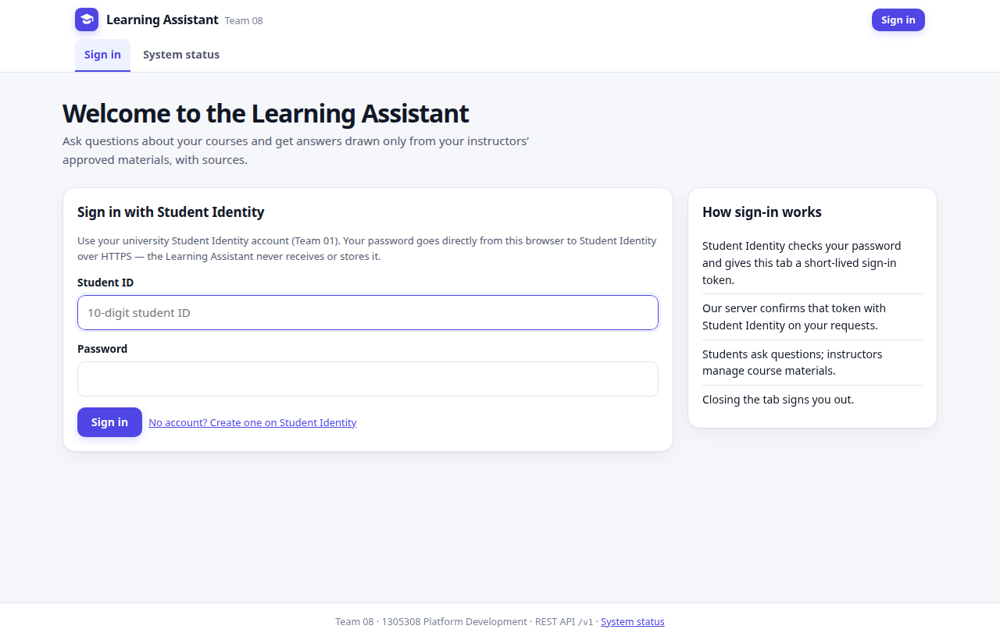
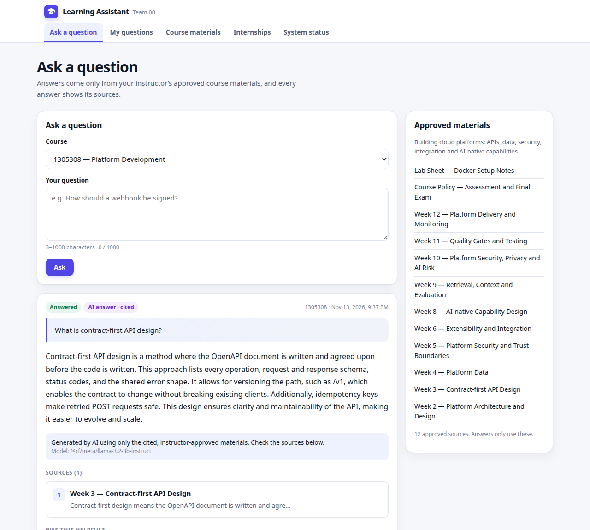
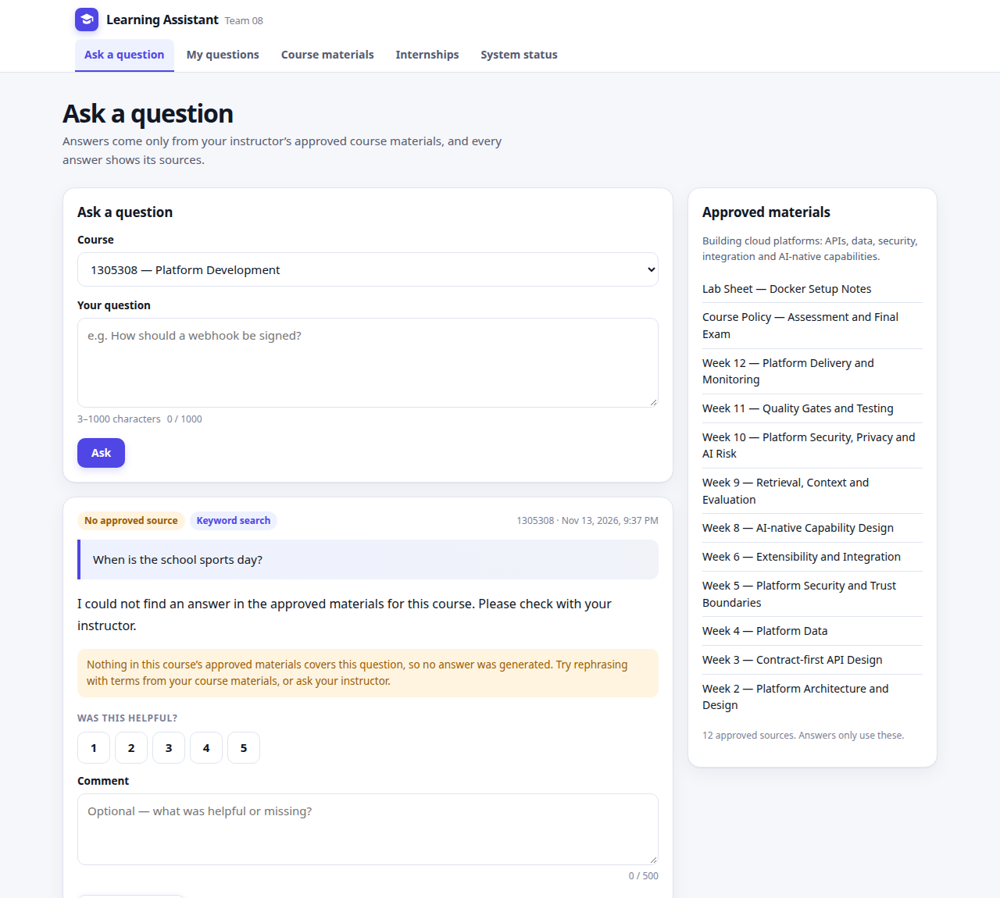
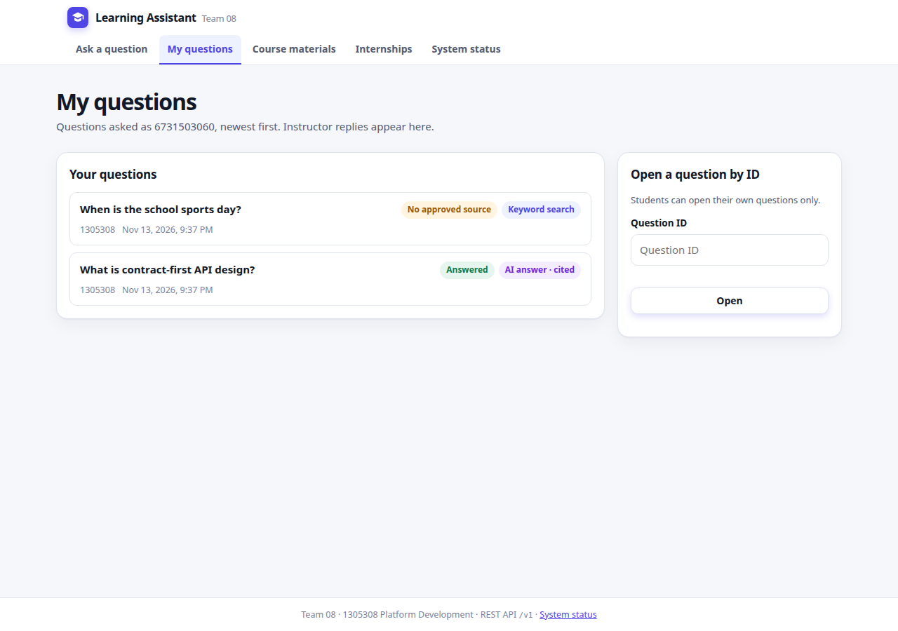
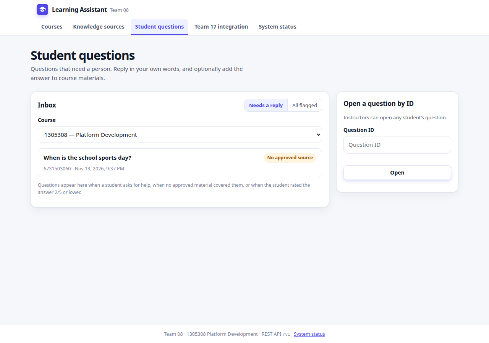
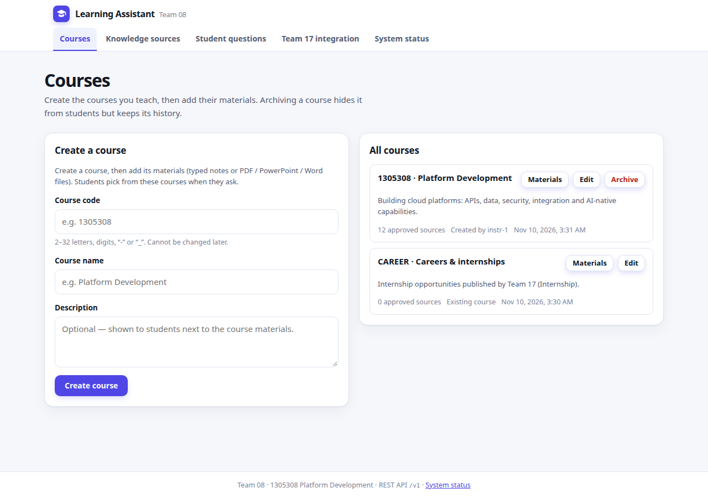
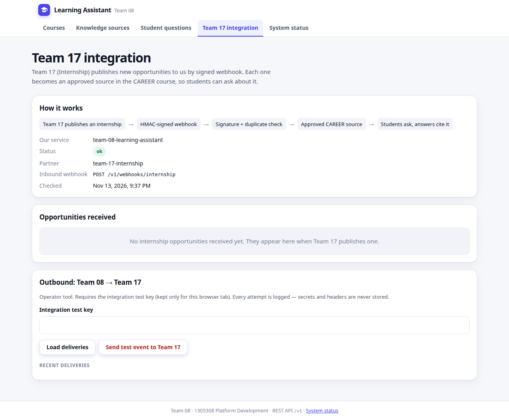
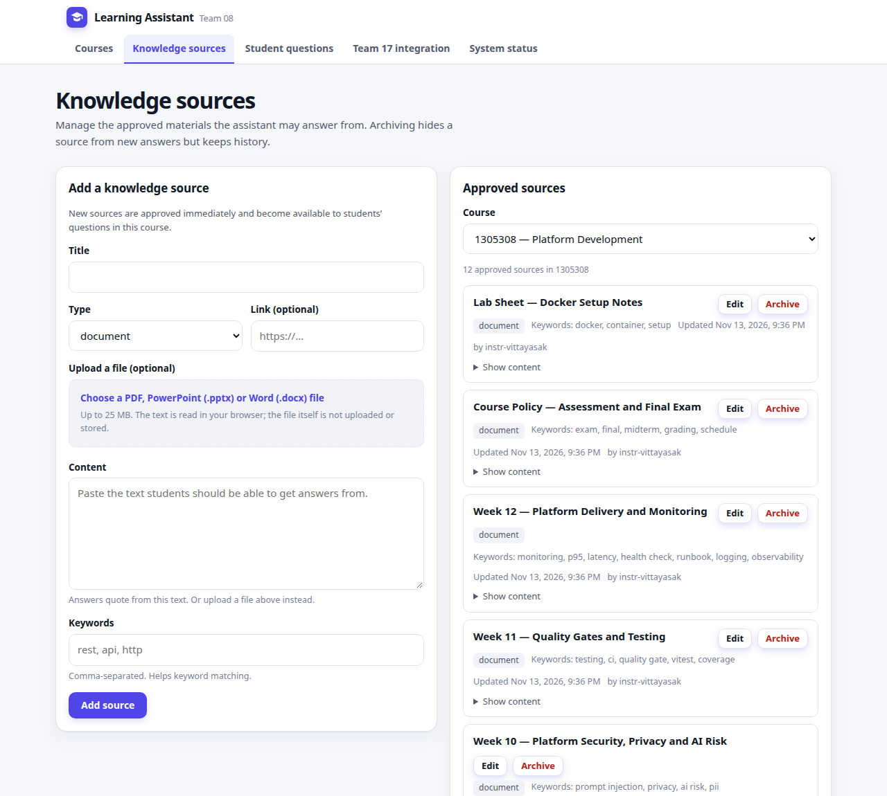
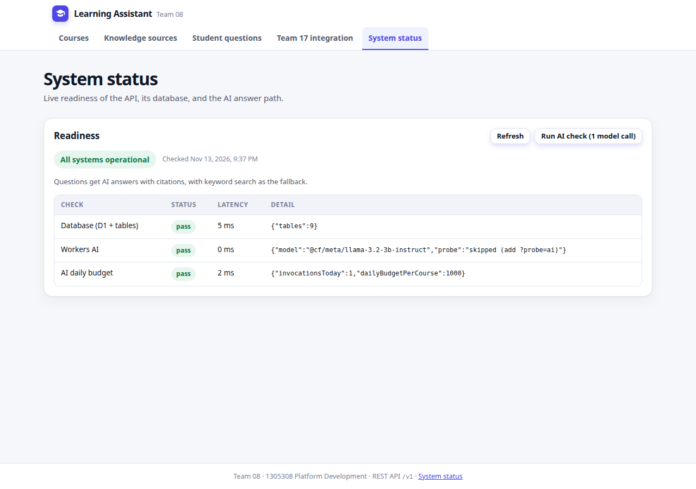

Learning Assistant
- Requirement evidence map
- Product overview and team
- Functional requirements
- Non-functional requirements
- Architecture
- Design decisions
- Data model
- API reference and example calls
- External integrations
- User interface
- Security and PDPA
- Testing and quality assurance
- Development process and AI usage
- Deployment and operations
- Limitations and future work
1. Requirement evidence map
How this document and the repository answer each item of the Mini Project submission requirements.
| Requirement | Evidence | Section / file |
|---|---|---|
| 1. Completion and cloud deployment | One Cloudflare Worker serves the web UI and the API; D1 database and Workers AI on Cloudflare. Live URL above. Deep health check reports ok. | §5, §14 · wrangler.jsonc |
| 2. Features and Happy Path | Student signs in → asks → AI answer with citations → rates it. Second path: no source → ask my instructor → reply → saved as FAQ → next student gets a cited answer. | §3, §10 · Postman folders 3–4 |
| 3. Cross-group integration (API / webhook) | Team 01 Student Identity: every sign-in and every API call is verified by Team 01's API. Team 17: HMAC-signed inbound webhook and outbound handshake. | §9 · src/services/identity-client.ts, src/routes/webhooks.ts |
| 4. Development process and AI usage | Architecture, design decisions, workflow, team roles, AI tools per role, commit timeline. | §5, §6, §13 |
| 5. Security and PDPA | Personal data inventory, what is deliberately not collected, PDPA principles, OWASP-mapped controls, live responses proving them. | §11 · public/_headers, src/middleware/auth.ts |
| 6. Testing and QA | 169 automated tests (vitest) + 14 manual test cases + Postman collection against the live URL, including failures found and fixed. | §12 · test/, postman/ |
| 7. Code understanding and live modification | Layered code map; three fixes were made, tested and redeployed on evaluation day (search numbers, AI answer depth). | §5.3, §12.4, §14 |
2. Product overview and team
2.1 Problem
Students ask the same course questions again and again, and the answers already exist in the course materials, spread over many slides and PDFs. Instructors answer the same question many times. General AI chatbots answer confidently from outside the course, with no source, so a student cannot tell whether the answer matches the lecture.
2.2 Solution
- Answers come only from approved materials. Instructors decide what the assistant may use.
- Every answer shows its sources, with the passage it came from (and the slide or page for uploaded files).
- It says when it doesn't know. If no approved material covers the question, the student is told so and can ask the instructor in one click.
- Answers improve through the instructor. Low-rated or unanswered questions go to the instructor's inbox; a reply can be saved as a new approved FAQ source.
2.3 Users
| User | What they do |
|---|---|
| Student | Ask a question in a course, read the cited answer, rate it, ask the instructor, read replies, browse course materials and internships. |
| Instructor | Create and archive courses, add materials (typed text or PDF / PowerPoint / Word), reply to student questions, see the Team 17 integration. |
2.4 Team
| # | Member | Role | Responsible for |
|---|---|---|---|
| 1 | Khant Wai Lin | Product Manager | Scope and priorities, user journeys, acceptance criteria, coordination with partner teams |
| 2 | Thura Aung | Frontend UX/UI | Web UI screens, usability, accessibility, visual design |
| 3 | Thaw Zin Myo Aung | Backend API and Database | API endpoints and contract, data model and migrations, data integrity |
| 4 | Sai Aung Kham | Quality and Security | Test strategy and results, security controls, PDPA review |
| 5 | Zwe Thura Aung | Delivery and Document | Delivery plan and releases, documentation and evidence |
3. Functional requirements
The requirements were written in the PRD in August 2026 (md_files/PRD.md). This table records what was built. Where the design changed, the reason is given; nothing is marked done unless it runs in the deployed system.
| ID | Requirement | Status | As built |
|---|---|---|---|
| FR-01 | Authenticated access | Done | Every non-public route requires a Team 01 Student Identity token, verified by calling Team 01's GET /me. Missing or invalid token → 401. (Team 01 publishes no signing keys, so we verify by API instead of JWKS.) |
| FR-02 | Course-scoped listing | Partial | Instructors create courses; students see active courses only. There is no enrolment check, because no Course Catalog service was available to integrate. |
| FR-03 | Ask a question | Done | 3–1000 characters, one course, course must be active. Answered in the same request (201) instead of 202 + polling, because answers return in under a second. |
| FR-04 | Cited answer | Done | Each answer lists numbered sources with the passage excerpt and its location (e.g. "Slide 14"). |
| FR-05 | Approved-source retrieval | Done | Search reads only approved, non-archived sources of the question's own course. (Per-source instructor_only visibility was not built.) |
| FR-06 | No-source response | Done | No matching passage, or the AI judges the passages don't answer it → fixed "not found in approved materials" message, no citations, status no_source_found. |
| FR-07 | Citation validation | Done | Model output must be JSON, must cite at least one passage, and may cite only passages that were sent. Anything else is rejected and the keyword fallback is used. |
| FR-08 | Deterministic fallback | Done | Keyword search over titles, keywords and passage text, ranked and labelled "Keyword search". Used when AI is off, over budget, slower than 15 s, or returns invalid output. |
| FR-09 | Citation drill-through | Done | GET /v1/sources/:id/chunks shows the passages a source was split into, with page / slide / section labels. |
| FR-10 | Answer feedback | Done | Rating 1–5 (instead of helpful / not helpful) with an optional comment ≤ 500 characters. One rating per user per answer; rating again updates it. |
| FR-11 | Publish learning.questioned to Data & Analytics | Not built | No Data & Analytics team contract existed. Our cross-group work went to Team 01 (sign-in) and Team 17 (webhook) instead. |
| FR-12 | Knowledge source ingestion | Done | Typed text, a link, or an uploaded PDF / PPTX / DOCX. Text is extracted in the browser and split into ~1,000-character passages on the server. Original files are not stored (see §6, D7). |
| FR-13 | Knowledge source management | Done | Edit fields, archive (soft delete, idempotent). Archived sources leave search immediately; existing citations are kept. |
| FR-14 | Consume assignment.published | Changed | No Assignment team contract existed. The same inbound pattern (signed webhook, exactly-once by event ID) was built for Team 17's internship.opportunity.published. |
| FR-15 | Published OpenAPI document | Not built | The contract is documented in the README and §8, and executable as a Postman collection with tests. |
3.1 Features added during development (not in the original PRD)
| Feature | Why |
|---|---|
| Course management (create, rename, archive / restore) | Every source and question must belong to a real course (migration 0005). |
| "Ask my instructor", instructor inbox and replies | Gives the no-source case a human next step (PRD S-04). Replies can become FAQ sources, so the knowledge base grows. |
| "My questions" with unread-reply badges | Students can come back to earlier questions and see replies. |
Deep health check /v1/health/ready | Reports database, tables, AI and budget status; used for operations. |
4. Non-functional requirements
| ID | Requirement | Status | Evidence |
|---|---|---|---|
| NFR-01 | Answer latency | Met | Load test, 100 requests: p50 541 ms, p95 756 ms, p99 829 ms (budget p95 ≤ 5000 ms). AI abandoned after 15 s (AI_TIMEOUT_MS). |
| NFR-02 | Worker CPU budget | Met | No file parsing on the server: PDF / PPTX / DOCX text is extracted in the browser. |
| NFR-03 | Authentication boundary | Met | No passwords, hashes or user secrets stored. Passwords go from the browser straight to Team 01. |
| NFR-04 | Authorization enforcement | Met | requireAuth, requireRole and ownership checks on the server; retrieval filtered by course and status before the AI sees anything. |
| NFR-05 | Cost | Met | Cloudflare free tier only: Workers, D1, Workers AI. No paid component. |
| NFR-06 | Quota safety | Met | Per-course, per-day AI counter (ai_usage), atomic increment, budget 300 per course; over budget → keyword fallback. |
| NFR-07 | Availability and degradation | Met | AI failure never blocks an answer (fallback). Team 01 down → 503, never a silent sign-in. Team 01 is the one hard dependency, as planned. |
| NFR-08 | Data protection | Met | Uploaded files are never stored; question text never leaves the platform or enters logs. |
| NFR-09 | Accessibility | Partial | Labelled form fields, keyboard navigation, aria-current on navigation, text labels on status badges (not colour alone). No formal WCAG audit was run. |
| NFR-10 | Responsive design | Met | Checked by hand at desktop and phone widths, light and dark themes. |
| NFR-11 | Observability | Met | One structured JSON log line per request (correlation ID, route pattern, role, status, duration); AI decision log with tokens and latency only. |
| NFR-12 | Maintainability | Partial | README local setup in a few commands; layered code; 169 tests. No generated OpenAPI file. |
| NFR-13 | Expected scale | Met | 8.72 requests/s sustained in the load test, above the 300 questions/week target. |
5. Architecture
5.1 Components
flowchart LR
subgraph Browser
UI["Web UI (HTML + JS)"]
end
subgraph CF["Cloudflare - one Worker"]
ASSETS["Static assets public/"]
API["Hono API /v1"]
D1[("D1 SQLite")]
AI["Workers AI llama-3.2-3b"]
end
T01["Team 01 Student Identity"]
T17["Team 17 Internships"]
UI -- "sign in" --> T01
UI -- "API + Bearer token" --> API
API -- "verify token GET /me" --> T01
API -- "SQL, bound parameters" --> D1
API -- "question + approved passages" --> AI
T17 -- "signed webhook" --> API
API -- "signed handshake" --> T17
ASSETS -.-> UI
| Component | Technology | Role |
|---|---|---|
| Web UI | Plain HTML, CSS, JavaScript (public/) | Screens for students and instructors; extracts text from uploaded files. Holds no secret and makes no security decision. |
| API | Cloudflare Worker + Hono, TypeScript (src/) | The only trust decision point: authentication, roles, validation, retrieval, AI call, citation checks. |
| Database | Cloudflare D1 (SQLite) | All relational data, with foreign keys, UNIQUE and CHECK constraints. |
| AI | Workers AI, @cf/meta/llama-3.2-3b-instruct | Writes the answer from the selected passages only. |
| Identity | Team 01 Student Identity (external) | Accounts, passwords, tokens. |
5.2 Request flow: a student asks a question
sequenceDiagram
participant S as Student browser
participant W as Worker /v1/questions
participant T as Team 01 Identity
participant DB as D1
participant AI as Workers AI
S->>W: POST /v1/questions + Bearer token
W->>T: GET /me (cached 60 s)
T-->>W: 200 token is genuine
W->>W: role student? length 3-1000? course active?
W->>DB: keyword search over approved passages of this course
alt passages found and AI within budget
W->>AI: fixed system prompt + numbered passages as data + question
AI-->>W: JSON answer + citation numbers
W->>W: validate JSON and citations
else no AI, timeout, invalid output
W->>W: labelled keyword-search answer
end
W->>DB: insert question, answer, citations
W-->>S: 201 answer + sources + mode
5.3 Code layout
src/index.ts wires middleware and routes under /v1
src/middleware/ correlation id → request logger → auth (per route)
src/routes/ HTTP layer: parse and validate input, check role, shape response
src/services/ AI answer, keyword search, chunking, identity client
src/repositories/ all SQL, always with bound parameters
src/lib/ validation, error shape, structured logger, constants
migrations/ 0001 → 0005, applied in order
public/ web UI (app.js, file-extract.js, vendor/pdf.js + JSZip)
test/ 17 vitest files, 169 tests
postman/ full collection, final demo collection, production environment6. Design decisions
| # | Decision | Why | Rejected alternative |
|---|---|---|---|
| D1 | One Worker serves both UI and API | One deploy command; same origin, so no CORS and a strict same-origin Content-Security-Policy. | React SPA on Cloudflare Pages + separate API (two deploys, CORS) |
| D2 | Plain HTML/JS, no framework | No build step; small enough for five people to read; easy to keep XSS-safe (textContent only). | React + Vite (planned in PRD) |
| D3 | Sign-in delegated to Team 01, verified by API call | Team 01 publishes no signing keys, so we ask their GET /me; 60 s cache keyed by a SHA-256 hash of the token keeps it fast. | Own accounts; local JWT check with JWKS (not available) |
| D4 | Keyword search over passages | Free, deterministic, explainable, and always available as the fallback. Weakness: misses paraphrases. | Vector search (Vectorize not on free plan); FTS5 |
| D5 | Llama 3.2 3B instead of 8B | Load test: p95 fell from 4091 ms to 756 ms with acceptable answers. | Larger 8B model |
| D6 | AI with guardrails and a fallback | Passages sent as data, JSON-only output, citation validation, 15 s timeout, daily budget. The product works with AI off. | AI-only answers |
| D7 | Extract file text in the browser, keep no files | Stays within the Worker CPU limit; no file storage to secure (privacy); no R2 or cron needed. | R2 storage + cron extraction job |
| D8 | Synchronous answer (201) | Answers arrive in under a second, so polling adds complexity without benefit. | 202 + polling |
| D9 | Integrity rules in the database | UNIQUE(question_id) on answers, CHECK constraints on status / mode / rating, event ID as primary key for webhook idempotency. A race cannot slip past a constraint. | Check-then-insert in code |
| D10 | Archive instead of delete | Removes a source from search at once while keeping citations already shown to students. | Hard delete |
7. Data model
erDiagram
courses ||--o{ knowledge_sources : has
courses ||--o{ questions : has
knowledge_sources ||--o{ source_chunks : "split into"
knowledge_sources ||--o{ citations : "cited by"
questions ||--|| answers : "has one"
answers ||--o{ citations : cites
answers ||--o{ answer_feedback : "rated by"
questions ||--o{ instructor_replies : "replied to"
| Table | Purpose and key rules |
|---|---|
courses | Course code (id), name, description, active | archived. |
knowledge_sources | Approved material for one course: title, type, content, keywords, file name, status draft | approved | archived (CHECK). |
source_chunks | ~1,000-character passages of a source with a location label ("Page 3", "Slide 14"). What search ranks. |
questions | Course, asking student ID, text, status pending | answered | no_source_found | failed, escalation time and note. |
answers | One per question (question_id UNIQUE + FK, cascade). mode ai | fallback, no_source_found flag. |
citations | Links an answer to a source excerpt with score and location. FK to answer (cascade) and source (restrict: cited sources are archived, never deleted). |
answer_feedback | Rating 1–5 (CHECK), comment ≤ 500, one row per user per answer. |
instructor_replies | Reply text, instructor ID, FAQ source created from it (if any), when the student read it. |
received_events | Inbound webhook ledger; event_id is the primary key, so a replay cannot be processed twice. |
outbound_webhook_deliveries | Log of every outbound Team 17 delivery attempt and result; never secrets or headers. |
ai_usage | AI calls per course per UTC day, for the budget. |
Migrations: 0001 core tables and 8 indexes · 0002 outbound deliveries · 0003 AI budget · 0004 passages, replies, escalation · 0005 courses. Indexes match the real queries, e.g. knowledge_sources(course_id, status) and questions(student_id, created_at). /v1/health/ready reports down if any table is missing.
8. API reference and example calls
Base URL https://learning-assistant-api.6731503060.workers.dev. JSON only. Success: {"data": …}. Error: {"error": {"code", "message", "correlationId"}}. Every response carries an x-correlation-id header.
| Method | Path | Who | Purpose |
|---|---|---|---|
| GET | /v1/health | public | Liveness |
| GET | /v1/health/ready | public | Database, tables, AI, budget (?probe=ai makes one model call) |
| GET | /v1/auth/config | public | Which sign-in mode is active |
| GET | /v1/me | signed in | Caller's ID and role |
| GET | /v1/courses, /v1/courses/:id | student, instructor | List / read courses |
| POST / PATCH | /v1/courses, /v1/courses/:id | instructor | Create; rename, describe, archive / restore |
| GET | /v1/courses/:id/sources | student, instructor | Approved sources of a course |
| POST / PATCH / DELETE | /v1/sources, /v1/sources/:id | instructor | Create (text or file passages), edit, archive |
| GET | /v1/sources/:id/chunks | student, instructor | Passages with page / slide labels |
| POST | /v1/questions | student | Ask; returns the answer with citations |
| GET | /v1/questions/:id | owner, instructor | Question, answer, citations, replies |
| GET | /v1/me/questions | student | Own questions with unread-reply counts |
| POST | /v1/questions/:id/escalate | owner | "Ask my instructor" with optional note |
| POST | /v1/questions/:id/replies | instructor | Reply; addToSources: true saves it as an FAQ |
| GET | /v1/instructor/inbox | instructor | Questions needing a person |
| POST | /v1/answers/feedback | student, instructor | Rate 1–5 (201 first time, 200 when changed) |
| GET | /v1/integration/status | public | Integration status for partner teams |
| POST | /v1/webhooks/internship | HMAC signature | Team 17 inbound webhook |
| POST / GET | /v1/integrations/team17/test-send, …/deliveries | integration key | Outbound handshake to Team 17 and its log |
8.1 Ask a question (AI answer)
POST /v1/questions
Authorization: Bearer <Student Identity token>
Content-Type: application/json
{"courseId": "1305308", "questionText": "Why should constraints be enforced in the database?"}201 Created
{
"data": {
"question": { "id": "403cc3de-…", "courseId": "1305308", "status": "answered" },
"answer": {
"id": "b8f490e7-…",
"content": "Constraints should be enforced in the database because foreign keys, CHECK, and UNIQUE constraints are enforced in the database, not in a prior SELECT. This means that the database will ensure data integrity by preventing invalid or inconsistent data …",
"mode": "ai",
"noSourceFound": false
},
"citations": [{
"sourceId": "d970ace2-…",
"sourceTitle": "Week 4 — Platform Data",
"excerpt": "…Constraints such as foreign keys, CHECK and UNIQUE are enforced in the…",
"score": 5
}],
"generation": { "mode": "ai", "fallbackReason": null, "model": "@cf/meta/llama-3.2-3b-instruct" }
}
}8.2 Rate the answer
POST /v1/answers/feedback
{"answerId": "b8f490e7-…", "rating": 5, "comment": "Clear and cited."}
201 Created
{"data": {"id": "c7933196-…", "answerId": "b8f490e7-…", "userId": "6731503060", "rating": 5,
"comment": "Clear and cited.", "createdAt": "2026-11-13T14:38:48.947Z"}}8.3 Rejected requests
| Request | Response |
|---|---|
Another student opens GET /v1/questions/403cc3de-… | 403 {"error":{"code":"FORBIDDEN","message":"You do not have access to this question."}} |
Student calls POST /v1/sources | 403 {"error":{"code":"FORBIDDEN","message":"You do not have access to this operation."}} |
POST /v1/questions with "questionText": "hi" | 400 {"error":{"code":"VALIDATION_ERROR","message":"questionText must be between 3 and 1000 characters."}} |
GET /v1/me with a fake token (live site) | 401 {"error":{"code":"UNAUTHORIZED","message":"Your sign-in is invalid or has expired. Please sign in again."}} |
8.4 Deep health (live site, 13 Nov 2026)
GET /v1/health/ready
200 {"status":"ok","answerPath":"ai_with_fallback",
"checks":{"database":{"status":"pass","detail":{"tables":9}},
"ai":{"status":"pass","detail":{"model":"@cf/meta/llama-3.2-3b-instruct"}},
"ai_budget":{"status":"pass","detail":{"invocationsToday":0,"dailyBudgetPerCourse":300}}}}9. External integrations
9.1 Team 01 — Student Identity (API)
The Learning Assistant has no accounts or passwords of its own. Every user signs in with Team 01's Student Identity at https://student-identity.onrender.com, and every API request is trusted only after Team 01 confirms the token.
sequenceDiagram
participant B as Browser (our UI)
participant T as Team 01 Student Identity
participant W as Team 08 API
B->>T: POST /auth/login {studentId, password}
T-->>B: 200 {token}
Note over B: token in sessionStorage, password field cleared
B->>W: GET /v1/me, Authorization Bearer token
W->>T: GET /me, Authorization Bearer token
T-->>W: 200 genuine, unexpired
W-->>B: 200 {id, role}
| Situation | Our response |
|---|---|
| No token, or demo headers claiming instructor | 401 UNAUTHORIZED |
| Fake, edited or expired token | 401 "Your sign-in is invalid or has expired." |
| Valid student token on an instructor route | 403 FORBIDDEN |
| Team 01 down or answering 5xx | 503 DEPENDENCY_UNAVAILABLE; never let in |
Code: src/services/identity-client.ts (25 s timeout for Team 01's sleeping free host, 60 s cache keyed by SHA-256 of the token, profile body discarded), src/middleware/auth.ts (role mapping: student → student; instructor, staff, admin or INSTRUCTOR_IDS → instructor; anything else → 403). Tests: 11 in test/identity-auth.test.ts.
9.2 Team 17 — Internships (webhook)
When Team 17 publishes an internship, it sends internship.opportunity.published to POST /v1/webhooks/internship. We verify an HMAC-SHA-256 signature over the raw body (constant-time crypto.subtle.verify), record the event ID, and create one approved source in the CAREER course, so students can ask about internships and get cited answers.
| Case | Response |
|---|---|
| New, correctly signed event | 202 {"status":"accepted","knowledgeSourceId":"…"} |
Same eventId again (replay) | 200 {"status":"duplicate","processed":false}, no second source |
| Missing or wrong signature | 401 UNAUTHORIZED, nothing stored |
| Invalid payload | 400 VALIDATION_ERROR |
Outbound, POST /v1/integrations/team17/test-send sends a signed partner.updated handshake to Team 17 and logs each attempt in outbound_webhook_deliveries. The destination URL is fixed in configuration, never taken from the caller. Secrets are Cloudflare secrets, never in the repository. Contract: docs/team17-integration-contract.md. Tests: internship-webhook, webhook-signature, team17-integration (21 tests).
10. User interface
Screens below were captured on 13 Nov 2026. The sign-in screen is from the live site; the others are from the same code run locally with the real Workers AI model and the course's seeded materials (the local build's development role switcher is hidden; the live site shows the signed-in student ID instead).









11. Security and PDPA
PDPA here means Thailand's Personal Data Protection Act B.E. 2562 (2019).
11.1 Personal data we hold
| Data | Why | Who can see it |
|---|---|---|
User ID (Student Identity sub) | Own questions, one rating per user, who changed materials | The user; instructors |
| Question text, "ask my instructor" note | Answer the question; tell the instructor what is unclear | The asking student; instructors |
| Rating and comment | Answer quality; low ratings go to the instructor | Instructors |
| Instructor reply | Answer the student | The asking student; instructors |
11.2 Deliberately not collected or kept
| Not kept | How |
|---|---|
| Passwords | Sent from the browser straight to Team 01; our server never receives them; the form clears the field. |
| Name, email, profile | Team 01's /me response body is discarded; only sub and role are used, and the role is not stored. |
| Uploaded files | Text is extracted in the browser; the file is never uploaded or stored. |
| Tokens, question or answer text in logs | Logs hold only IDs, lengths, counts, outcomes and the route pattern. The token cache is keyed by a SHA-256 hash. |
| User IDs sent to the AI | The model receives only the question and the selected passages, inside Cloudflare (no outside AI company). |
11.3 PDPA principles
| Principle | How it is met |
|---|---|
| Purpose limitation (s.21) | Data is used only to answer course questions and support students. No analytics, advertising or sharing. |
| Data minimisation (s.22) | Only sub and role from the identity provider; no profile data. |
| Lawful basis (s.24) | Processing is needed to provide the learning service the student signs in to use. |
| Access control | Students see only their own questions (403 otherwise); only instructors see the inbox. |
| Security of processing (s.37(1)) | HTTPS only, token verification, roles, validation, CSP (§11.4). |
| Transparency | Each answer says whether it is AI or keyword search, and which sources it used. The sign-in page explains where the password goes. |
| Session data | The token is kept in sessionStorage and removed when the tab closes. |
Known gaps: no self-service deletion of a student's questions yet (right to erasure, s.33; the foreign keys already cascade, so the endpoint is small), no automatic retention period, and up to 50 recent questions are cached in the browser's localStorage for "My questions".
11.4 Security controls (OWASP Top 10)
| Threat | Control | Where |
|---|---|---|
| A01 Broken access control | requireAuth on every non-public route, requireRole for instructor routes, ownership checks for questions and ratings | src/middleware/auth.ts, routes |
| A07 Authentication failures | Every token verified by Team 01 (cache ≤ 60 s, never past expiry); edited or expired tokens rejected; Team 01 down → 503 | identity-client.ts |
| A03 SQL injection | Bound parameters everywhere; dynamic UPDATE columns from a fixed allowlist | src/repositories/ |
| A03 XSS | textContent only, never innerHTML; only http(s) links rendered | public/app.js |
| Prompt injection | Passages sent as delimited data; fixed system prompt; JSON-only output; only sent passages may be cited | ai-answer-service.ts |
| A05 Misconfiguration / clickjacking | Strict CSP, X-Frame-Options: DENY, nosniff, no-referrer, camera / microphone / location disabled | public/_headers |
| A04 Abuse and cost | Input limits (question 3–1000, comment ≤ 500, rating 1–5, file ≤ 25 MB); per-course AI budget; 15 s AI timeout | src/lib/constants.ts |
| Webhook forgery and replay | HMAC-SHA-256, constant-time compare; event ID primary key | webhook-signature.ts |
| A09 Logging / error leakage | Structured logs with correlation IDs; generic 500 to clients, stack only in server logs | request-logger.ts, index.ts |
| Secrets | None in the repository; Cloudflare secrets per deployment | .dev.vars.example |
11.5 Evidence from the live site (13 Nov 2026)
$ curl -i https://learning-assistant-api.6731503060.workers.dev/v1/me -H "Authorization: Bearer not-a-real-token"
HTTP/2 401
{"error":{"code":"UNAUTHORIZED","message":"Your sign-in is invalid or has expired. Please sign in again.", …}}
$ curl -I https://learning-assistant-api.6731503060.workers.dev/
content-security-policy: default-src 'self'; script-src 'self'; style-src 'self'; img-src 'self' data:;
connect-src 'self' https://student-identity.onrender.com; font-src 'self'; object-src 'none';
base-uri 'self'; form-action 'self'; frame-ancestors 'none'
permissions-policy: camera=(), microphone=(), geolocation=(), payment=()
referrer-policy: no-referrer
x-content-type-options: nosniff
x-frame-options: DENY12. Testing and quality assurance
12.1 Automated tests
Framework: vitest. Command: npm test. Routes are called through Hono directly against an in-memory SQLite database with all migrations applied, so the real SQL runs; Team 01 and Workers AI are replaced by fakes. Result on 13 Nov 2026: 17 files, 169 tests, all passing.
| Test file | Tests | What it proves |
|---|---|---|
source-uploads | 23 | PDF/PPTX/DOCX passages, slide-level citations, size and type limits, instructor-only |
courses | 18 | Course create/archive, code validation, end-to-end flow |
routes-auth-and-validation | 16 | Role restrictions, 400 before touching the database, correlation IDs |
ai-answer-service | 15 | Invented or missing citations rejected, prompt injection kept as data, timeout fallback |
instructor-replies | 13 | Escalation, inbox, private replies, reply saved as FAQ |
validation / domain-constants | 23 | Validation helpers, status / rating / length rules |
identity-auth | 11 | Team 01 sign-in: forged / expired tokens, 503 when Team 01 is down |
team17-integration / internship-webhook / webhook-signature | 21 | Outbound handshake, signed inbound webhook, replay safety, HMAC |
fallback-search-service | 9 | Ranking, course isolation, "week 3" finds Week 3 |
health-ready / health / integration-status | 11 | Deep health incl. missing migrations, liveness, status |
feedback / question-authorization | 9 | One rating per user, owner-only access |
Most tests are negative cases: they send a bad or unauthorised request and check that it is refused with the right status and that nothing is written.
$ npm test
Test Files 17 passed (17)
Tests 169 passed (169)12.2 API tests (Postman)
postman/Final-Demo.postman_collection.json runs against the live URL in seven folders: sign in with Team 01, system health, Happy Path 1 (material → question → answer → rating), Happy Path 2 (no source → ask instructor → reply → FAQ → cited answer), Team 17 webhook (202, duplicate 200, bad signature 401), security failures (401 / 403 / 400 / 404), clean-up. Each request has test scripts; the full collection has ~70 requests.
12.3 Manual testing
| # | Step | Expected | Result |
|---|---|---|---|
| M1 | Instructor creates course 1305308 | Course listed | Pass |
| M2 | Instructor adds a text source | Listed under approved sources | Pass |
| M3 | Student asks a matching question | Answer with citation | Pass |
| M4 | Student rates the answer 5 | Rating stored | Pass |
| M5–M6 | Ask my instructor; instructor replies | In inbox; student sees "New reply" | Pass |
| M7 | Course without description | No stray text | Failed, fixed, passed |
| M8–M11 | Student creates source; reads other's question; no credentials; bad body | 403, 403, 401, 400 | Pass |
| M12 | Security headers on / | CSP, X-Frame-Options | Pass |
| M13 | Live: sign in with Team 01, ask, AI answer | Token from Team 01, cited AI answer | Pass |
| M14 | Postman against the live URL | Documented status codes | Pass |
| M15 | Live: "what we have to learn in week 3" | Cites Week 3 | Failed, fixed, passed |
| M16 | Live: "what is week 3 about?" | Explained in several sentences | Failed, fixed, passed |
12.4 Failures found and fixed
| Found by | Problem | Fix (commit) |
|---|---|---|
| Manual test M7 | The word "null" shown when a course had no description | ed9f5ec |
| Code review | Deep health said ok when migrations 0004/0005 were missing | b6e1641 + test |
| Review of feedback route | A student could rate another student's answer, many times | 5d4d689 + tests |
| Load test | p95 4091 ms with the 8B model | Switched to 3B: p95 756 ms |
| Manual test M15 (live) | Search dropped the "3" in "week 3", so the AI got the wrong weeks | c84cbe1: keep single digits, match whole numbers + 2 tests |
| Manual test M16 (live) | The 3B model answered with only the title | 214ccaf, 97ee09f: explain-instruction in the prompt and user message; checked against the real model before deploying |
13. Development process and AI usage
13.1 Workflow
- Requirements first: PRD with FR / NFR / business rules; code comments cite the requirement they implement (e.g.
PRD FR-07). - Contract and data design before code (Assignment 3: schema, ER diagram, API).
- Vertical slices: each feature lands with its migration, route, repository and tests together.
- Git:
mainplus short feature branches (e.g.feature/uploads-and-replies), conventional commit messages. - Before each commit:
npm testandnpm run typecheckpass. - Deploy: a member with Cloudflare access runs migrations, then
npm run deploy:khant.
13.2 Commit history (milestones)
| Date | Milestone |
|---|---|
| 31 Aug 2026 | Repository created; PRD and design documents |
| 20 Sep 2026 | Hono Worker scaffold, D1 schema (migration 0001), first API vertical slice |
| 21 Sep 2026 | Assignment 3 complete; Team 17 webhook receiver |
| 8 Nov 2026 | Workers AI answers, structured logs, deep health, load test (p95 proof) |
| 9 Nov 2026 | Feedback authorization fixes, Postman collection, web UI served by the Worker, cloud environment |
| 10 Nov 2026 | Team 01 sign-in, file uploads and instructor replies, courses, UI refresh, evaluation evidence, live fixes |
Full history: git log on GitHub (30 commits from all five members).
13.3 AI tools used in development
| Role (member) | Tool | How AI was used | How output was checked |
|---|---|---|---|
| Product Manager (Khant Wai Lin) | Claude Code | Turning PRD requirements into features (Team 01 sign-in, courses, uploads, replies); user journeys and acceptance criteria | Each feature checked against its FR/NFR; Happy Path walked end to end; Team 01 sign-in confirmed with real accounts |
| Frontend UX/UI (Thura Aung) | GitHub Copilot | CSS and layout for the UI refresh; repetitive UI code | Checked in the browser at desktop and phone width, light and dark; no innerHTML; CSP still passes |
| Backend API and Database (Thaw Zin Myo Aung) | Claude Code | Tracing request flows; finding the deep-health and "null" bugs; the week-number search fix and AI prompt fix; Postman demo collection; these documents | Every diff reviewed; npm test and typecheck; a new test that fails without the fix; prompt checked against the real model; claims checked against the code |
| Quality and Security (Sai Aung Kham) | GitHub Copilot | Negative test cases (forged tokens, other students' data, bad input); OWASP review; PDPA inventory | Each case run as a real test or curl request; a control counts only when its 401/403/400 is seen |
| Delivery and Document (Zwe Thura Aung) | Claude Code | AI answer path, structured logs, deep health, load-test script; runbook and handover docs | Load test against the budget; model choice on measured data; docs checked against the running system |
13.4 AI inside the product
Workers AI llama-3.2-3b-instruct writes answers only from approved passages, with a fixed system prompt, passages sent as data, JSON-only output, citation validation, a 15 s timeout, a per-course daily budget, and a keyword fallback. Ratings do not retrain the model; improvement goes through the instructor (low rating → inbox → reply → FAQ source), so a person always decides what the assistant may say.
14. Deployment and operations
| Item | Detail |
|---|---|
| Platform | Cloudflare Workers (free tier), Worker learning-assistant-api, environment khant |
| Deploy | npm run deploy:khant publishes UI and API together |
| Database migrations | npm run db:migrate:khant (applies only missing, additive migrations, before deploying code that needs them) |
| Rollback | wrangler rollback; migrations are additive, so older code keeps working |
| Configuration | wrangler.jsonc: AUTH_MODE=identity, AI model, budget, timeout. Secrets via wrangler secret put |
| Health | /v1/health (liveness), /v1/health/ready (database, tables, AI, budget; 503 when degraded) |
| Logs | Structured JSON per request with correlation ID; AI decision log (mode, fallback reason, tokens, latency) |
| Local development | npm ci → npm run db:migrate:local → npm run dev:local (local D1, real Workers AI, demo sign-in) → npm test |
| Runbook | docs/week12-handover/Incident_Runbook.md |
15. Limitations and future work
| Limitation | Next step |
|---|---|
| Keyword search misses paraphrased questions | Semantic search with embeddings if a free vector option becomes available |
| No course enrolment check | Integrate a Course Catalog service; deny questions outside a student's courses |
| No self-service data deletion or retention period | DELETE /v1/me/questions/:id (cascades already in place) and a scheduled clean-up after each term |
| Small model gives short answers when material is short | Richer source material (upload full slides); larger model if latency allows |
| No OpenAPI file; no CI pipeline | Generate OpenAPI from the validators; run npm test on every push with GitHub Actions |
No per-source visibility (instructor_only) | Add a visibility column and filter it in the search query |